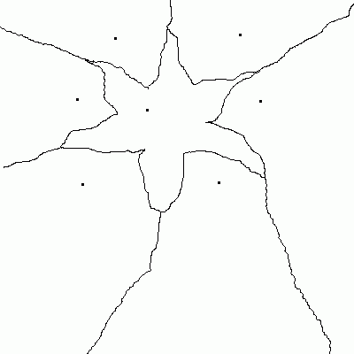
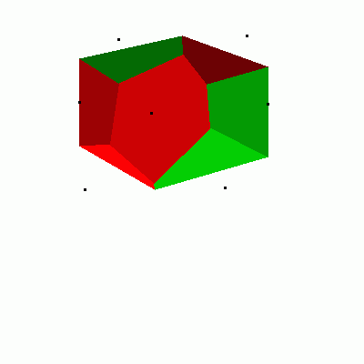
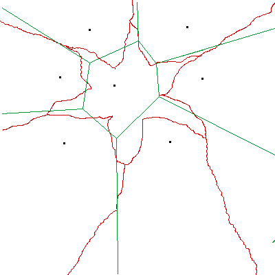

Santa was having a horrible time co-ordinating the feeding of not only the big 8 reindeer (code names: comp, misc, news, rec, sci, soc, talk, and alt) but all their reindeer brothers and sisters, aunts and uncles, and various degrees of cousin. The reindeer are fed via 7 monolithic steel and concrete grain towers that were put in place centuries ago. Under the current reindeer village configuration some reindeer have to travel outside their neighborhood to get to a grain tower, and Reindeer factional tensions are on the rise.

The neighborhoods must be redrawn so that each neighborhood has a central grain tower. Replacing or moving the grain towers would be prohibitively expensive. How do we design the new neighborhoods around each of the immovable grain towers? Santa had no idea so he called in his smartest elf—Hermey the Elf, D.D.S. Luckily Hermey had an ace up his sleeve by way of having had an elven education in computational geometry before developing an obsession for all things dental. He also knew Perl. With such a powerful peanut butter and chocolate combination on his side he quickly dashed out a script using Math::Geometry::Voronoi and the problem was solved! Because Santa wanted an easy to visualize executive summary he also used GDand Tkx to make some nice visualizations.
A voronoi diagram1 will create neighborhoods around each of the 7 grain towers so that each neighborhood has exactly one grain tower and that grain tower is the closest grain tower from any point in the neighborhood.
Making practical use of Math::Geometry::Voronoi was a little tricky at first though. There is a tempting function called polygons() which returns the computed polygons representing the neighborhoods. However, if you also overlay the points for the grain towers over the polygons the points don't necessarily fall inside the polygon.

Why is this? Well, the polygons that are returned have finite edges but the voronoi algorithm draws the neighborhoods so that they extend off of Santa's compound and off into the North Pole and beyond. By extending lines to a far off point in the distance(off our canvas) we give the illusion of a line (well, technically a ray) extending to infinity. But this makes the visualization a little misleading so we remove some bells and whistles to arrive at a simpler but more accurate representation.

1 # How to build reindeer neighborhoods. Other applications exist as well. 2 # Adam Russell ac.russell@live.com 3 4 use GD; 5 use Tkx; 6 use Math::Geometry::Voronoi; 7 8 my $main_window = Tkx::widget->new("."); 9 perl_advent_ui($main_window); 10 &Tkx::MainLoop(); 11 12 sub perl_advent_ui { 13 my ($root) = @_; 14 my @points= ([272,39], 15 [130,43], 16 [87,112], 17 [294,114], 18 [166,124], 19 [247,206], 20 [93,208]); 21 22 my @gd_polys=create_voronoi_polygons(@points); 23 my @gd_edges=create_voronoi_edges(@points); 24 my $img_filename=encode_voronoi_image(\@gd_polys,\@gd_edges, \@points); 25 my $canvas = $root->new_tk__canvas(-width => 400, -height => 350); 26 my $voronoi_image=Tkx::image_create_photo(-file => $img_filename); 27 my $voronoi_tag="voronoi_diagram"; 28 $canvas->create_image([200,200],-image => $voronoi_image, -tag=>$voronoi_tag); 29 $canvas->g_grid(-column => 0, -row => 0); 30 } 31 32 sub create_voronoi_polygons{ 33 my(@points)=@_; 34 my $geo = Math::Geometry::Voronoi->new(points => \@points); 35 $geo->compute; 36 my @geo_polys = $geo->polygons; 37 my @gd_polys; 38 foreach my $geo_poly (@geo_polys){ 39 unshift @gd_polys,create_gd_poly(@{$geo_poly}[1..$#{$geo_poly}]); 40 } 41 return @gd_polys; 42 } 43 44 sub create_voronoi_edges{ 45 my(@points)=@_; 46 my $geo = Math::Geometry::Voronoi->new(points => \@points); 47 $geo->compute; 48 my @geo_edges = $geo->edges; 49 my @gd_edges; 50 print pp $geo->edges; 51 foreach my $geo_edge (@geo_edges){ 52 unshift @gd_edges,create_gd_edge(@{$geo_edge}[0..$#{$geo_edge}],$geo->vertices,$geo->lines,$geo->points); 53 } 54 return @gd_edges; 55 } 56 57 sub encode_voronoi_image{ 58 my($polys,$lines, $points)=@_; 59 my $mode=">:raw"; 60 my $filename="voronoi.gif"; 61 my $img = GD::Image->new(400,400,1); 62 $img->filledRectangle(0,0,500,500,0x00ffffff); 63 #my $k=0; 64 #my @color_array=(255,0,0); 65 #foreach my $poly (@{$polys}) { 66 # my $color=$img->colorAllocate($color_array[0],$color_array[1],$color_array[2]); 67 # $img->openPolygon($poly,$color); 68 # if($k%2==0){ 69 # $color_array[0]-=50;#every other time through the loop take the color down a notch 70 # #to get a small shading effect 71 # } 72 # ($color_array[1],$color_array[0],$color_array[2])=($color_array[0],$color_array[1],$color_array[2]);#each time through alternate red/green polys for a Christmas color scheme 73 # $k++; 74 #} 75 my $color_black=$img->colorAllocate(0,0,0); 76 foreach my $line (@{$lines}) { 77 $img->line(${$line}[0],${$line}[1],${$line}[2],${$line}[3],$color_black) 78 } 79 foreach my $point (@{$points}) { 80 $img->filledArc(${$point}[0],${$point}[1],3,3,0,360,$color_black); 81 } 82 open IMG, $mode, $filename or die $!; 83 print IMG $img->gif; 84 close IMG; 85 return $filename; 86 } 87 88 sub create_gd_poly{ 89 my(@points)=@_; 90 my $pgon=new GD::Polygon; 91 foreach my $point (@points){ 92 $pgon->addPt(@{$point}); 93 } 94 return $pgon; 95 } 96 97 sub create_gd_edge{ 98 my $points=pop @_; 99 my $lines=pop @_; 100 my $vertices=pop @_; 101 my(@edges)=@_; 102 my @gd_endpoints; 103 foreach my $edge (@edges){ 104 my $l_index=${$edge}[0]; 105 my($v_index,$x1,$y1,$x2,$y2); 106 if(${$edge}[1]!=-1){ 107 $v_index=${$edge}[1]; 108 ($x1,$y1)=(${$vertices}[$v_index][0],${$vertices}[$v_index][1]); 109 } 110 if(${$edge}[2]!=-1){ 111 $v_index=${$edge}[2]; 112 ($x2,$y2)=(${$vertices}[$v_index][0],${$vertices}[$v_index][1]); 113 } 114 my($a,$b,$c);#used for expressing the line in ax+by=c form 115 $a=${$lines}[$l_index][0]; 116 $b=${$lines}[$l_index][1]; 117 $c=${$lines}[$l_index][2]; 118 if(${$edge}[1]==-1){ 119 if($b){ 120 #if b is non-zero then the slope is -a/b 121 my $m=-1*$a/$b; 122 #calculate the y intercept 123 my $y_int=$y2-($m*$x2); 124 #Now set an extreme endpoint for the start of our line closer to the origin 125 $x1=1; 126 $y1=$m*$x1+$y_int; 127 } 128 } 129 if(${$edge}[2]==-1){ 130 if($b){ 131 #if b is non-zero then the slope is -a/b 132 my $m=-1*$a/$b; 133 #calculate the y intercept 134 my $y_int=$y2-($m*$x2); 135 #Now set an extreme endpoint to represent oo in our visualization 136 $x2=1000; 137 $y2=$m*$x2+$y_int; 138 } 139 } 140 if(!$b){#if b is 0 then we just have a vertical line 141 $x1=$c/$a; 142 $y1=rand();#any random value will do 143 $x2=$c/$a; 144 $y2=rand(1000);#any random value will do 145 } 146 unshift @gd_endpoints,[$x1,$y1,$x2,$y2]; 147 } 148 return @gd_endpoints; 149 }
1. Deeper info about Voronoi diagrams via Mathworld.